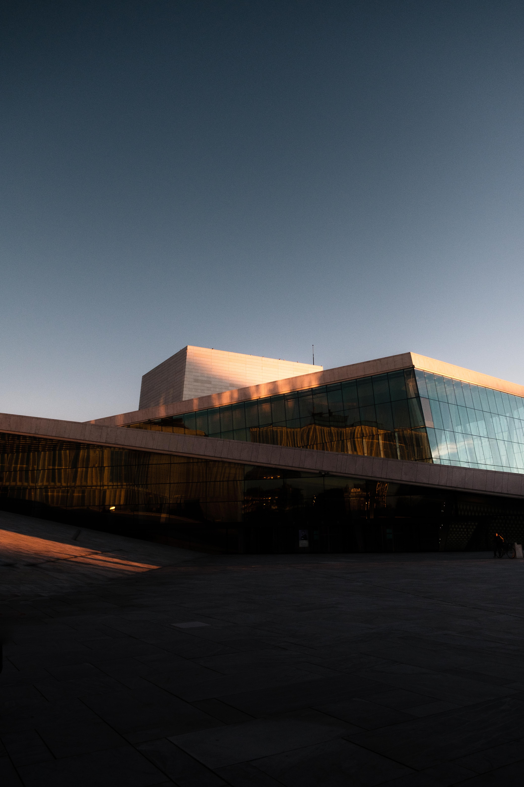

HOURS
Tuesday to Sunday : 09:00 - 17:00
Closed on Monday.
Open on Mondays if they fall on a national holiday or long weekend. The opening hours remain the same as usual.Mondays that the National Palace Museum will be open are listed as follows: 1/31 (09:00-16:00), 2/28, 4/4, and 10/10
